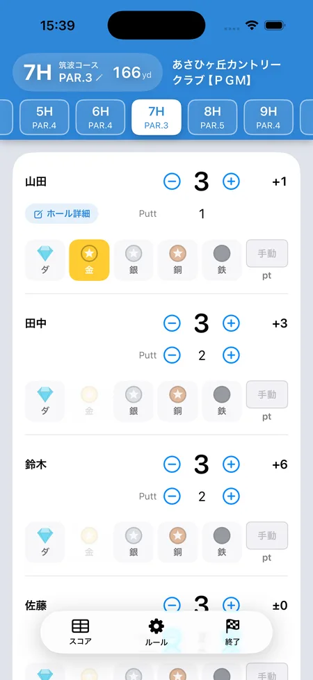

ゴルフ「オリンピック」のルールと点数計算
SQORE編集部 ｜ 2026年8月14日更新
オリンピックは、グリーンに乗ってから1パットでカップインすると「メダル」を獲得できるゴルフの定番ゲームです。カップから遠い人ほど高いメダルなので、ロングパットが入ると一気に逆転。「おはじき」と呼ばれることもあります。このページでは配点・精算の計算式・早見表・3人の場合までまとめています。
基本ルール
- 全員がグリーンに乗ったら、カップから遠い順にメダルを割り当てます（遠い人ほど上位のメダル）。
- 4人なら遠い順に金・銀・銅・鉄。
- 割り当てられたメダルは、1パットでカップインしたときだけ獲得できます。2パット以上なら0点です。
- グリーンの外から直接カップイン（チップイン）した場合は最高位のダイヤモンドです。
メダルの配点
| メダル | 条件 | 点数 |
|---|---|---|
| ダイヤモンド | グリーン外から直接カップイン | 5点 |
| 金 | 1番遠い位置から1パット | 4点 |
| 銀 | 2番目に遠い位置から1パット | 3点 |
| 銅 | 3番目に遠い位置から1パット | 2点 |
| 鉄 | 1番近い位置から1パット | 1点 |
これが最も広く使われている配点です。比率を変えずに「ダイヤ50・金40・銀30・銅20・鉄10」と10倍で運用する仲間内もあります（点数が大きいほうが盛り上がる、という理由です）。どちらでも順位と勝ち負けは変わりません。
点数の精算方法（計算式）
オリンピックは取った人が、取らなかった人からもらうゲームです。18ホールを終えたら各自の合計点を出して、次の式で精算します。
精算の式
（自分の合計点 × 人数）−（全員の合計点）
「（自分の合計点 × 自分以外の人数）−（自分以外の合計点）」と書いても結果は同じです。
計算例（4人・全員の合計26点）
Aさん12点／Bさん8点／Cさん5点／Dさん1点 → 合計26点
Aさん: 12×4−26＝+22
Bさん: 8×4−26＝+6
Cさん: 5×4−26＝−6
Dさん: 1×4−26＝−22
4人ぶんを足すと 22+6−6−22＝0。オリンピックの精算は必ず合計ゼロになるので、ここが合っていなければどこかで計算を間違えています。
1ホールぶんの早見表
そのホールで1人だけがメダルを取った場合の精算です。取った人は「点数×（人数−1）」、取らなかった人はそれぞれ「−点数」になります。
| 取ったメダル | 4人：取った人 | 4人：他の3人 | 3人：取った人 | 3人：他の2人 |
|---|---|---|---|---|
| ダイヤモンド（5点） | +15 | 各 −5 | +10 | 各 −5 |
| 金（4点） | +12 | 各 −4 | +8 | 各 −4 |
| 銀（3点） | +9 | 各 −3 | +6 | 各 −3 |
| 銅（2点） | +6 | 各 −2 | +4 | 各 −2 |
| 鉄（1点） | +3 | 各 −1 | 3人では鉄なし | |
2人以上がメダルを取ったホールは、上の式にまとめて入れれば同じ結果になります。ホールごとに精算せず、18ホールの合計点でまとめて計算するほうが早くて間違いません。
3人でやる場合
3人の場合は「鉄」を抜くだけが標準です。遠い順に金・銀・銅を割り当て、点数は4人のときと同じ金4・銀3・銅2のまま変えません。人数が減ったぶん点数まで下げてしまうと、1ホールの重みが変わってしまうためです。
精算の式も同じで、人数のところを3にするだけです。
昇格（金が決められなかったとき）
金の権利を持つ人が1パットで決められず、しかもそのボールが鉄の人より近くに寄った場合、銀が金へ、銅が銀へ、鉄が銅へ繰り上がるルールです。「寄せただけの人が得をしないように」という趣旨で、採用するかどうかは仲間内の取り決めです。
よくあるローカルルール
オリンピックは追加ルールの多いゲームです。よく使われるものを、加点と減点に分けて挙げます。全部入れると煩雑なので、2〜3個に絞るのが実用的です。
加点のルール
| 名前 | 内容 | 点数の例 |
|---|---|---|
| ニアピン賞 | PAR3でワンオンし、最もピンに近かった人 | +3点 |
| 砂イチ | バンカーから直接グリーンに乗せて1パット | +3点 |
| 竿イチ | ピンより遠い位置から宣言して1パットで沈める | +3点 |
| バーディ賞 | そのホールをバーディで上がる | +3点 |
| イーグル賞 | そのホールをイーグルで上がる | +15点 |
| ホールインワン賞 | ホールインワン | +30点 |
| フォーカード | 同じメダルを4回そろえる | その合計を追加 |
| ストレート | 金・銀・銅・鉄を1つずつそろえる | +10点（ダイヤ込みなら+15点） |
減点のルール
| 名前 | 内容 | 点数の例 |
|---|---|---|
| 3パット減点 | 3パット以上した人 | −3点 |
| くず鉄 | 1番近い「鉄」の人が1パットで外す | −1点 |
| 消しゴム | ニアピンを取った人より、グリーンを外した人が同スコア以上で上がると、ニアピンの権利が消える | ニアピン無効 |
| なめイチ | カップを舐めて入らなかった | −1点 |
| 逆オリンピック | 3パットした人に、金−1・銀−2・銅−3・鉄−4のマイナスを付ける | −1〜−4点 |
「消しゴム」は地域や仲間内によって「火消し」とも呼ばれます。どちらもニアピンの権利を打ち消すルールです。取り消されたぶんを次のPAR3に持ち越して2倍にする「二階建て」を足すこともあります。
計算がややこしくなるのは、ここから
メダルだけなら暗算でも足せますが、ニアピン加点・3パット減点・フォーカードあたりを入れ始めると、途中経過が誰にも分からなくなります。「誰が何点だっけ？」で毎回止まるのがオリンピックあるあるです。
SQOREでの扱い
アプリのSQOREが設定として持っているのは、メダルの配点（既定はダイヤ50・金40・銀30・銅20・鉄10。上の標準配点と比率は同じで10倍。1点単位に変えることもできます）と、バーディ・イーグル・ホールインワン・チップイン・ニアピンの加点、3パット減点、そして達成ポイント方式です。3人のときに鉄を抜くのも自動です。
上で挙げたローカルルールのうち、昇格・消しゴム（火消し）・砂イチ・竿イチ・くず鉄・フォーカード・ストレート・逆オリンピックには対応していません。数が多く、会ごとに条件が違うためです。これらを使う会は、その分を手動のポイント修正で足し引きしてください。
アプリならメダルをタップするだけ
押した瞬間に、点数も精算も出る
iPhoneアプリのSQOREなら、そのホールで取ったメダルを各自の行でタップするだけ。上の精算の式はアプリが勝手にやるので、暗算も電卓も要りません。誰かが取ったメダルは他の人の選択肢から自動で消えます。
配点は自由に変更でき、3パット減点・ニアピン加点・達成ポイント方式にも対応。ラスベガスなど他のゲームとの同時進行もできます。

よくある質問
点数計算はどうやる？
18ホール終了後に各自の合計点を出し、「（自分の合計点 × 人数）−（全員の合計点）」で精算します。全員のぶんを足すと必ず0になります。
3人の場合はどうする？
「鉄」を抜いて金・銀・銅だけにするのが標準です。点数は4人のときと同じまま変えません。
ダイヤモンドとは？
グリーンの外から直接カップインさせた場合の最高得点（チップインと同じ概念）で、金より高い5点を付けるのが一般的です。
2パット目が入ったらどうなる？
メダルがもらえるのは1パット目だけです。2パット以降は何も起きません（3パットは減点ルールを入れている場合のみマイナス）。
「おはじき」と同じもの？
同じゲームです。グリーン上でメダルを取り合う様子から「おはじき」と呼ぶ地域があります。
全員が1パットで沈めたら？
全員が自分のメダルの点数を獲得します。式に入れれば自動的に差し引きされるので、そのまま合計してください。
オリンピックの計算、もう暗算しなくてOK
SQOREはオリンピック・ラスベガスなど定番ゲームのポイントを自動計算する無料アプリです。
ゲームをしない日はスコアアプリとしてそのまま使えます。いま打つホールの自分の平均スコアやOB率も出ます。
Download on theApp Store